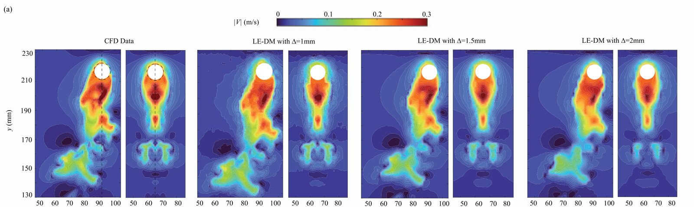

Boundary-aware velocity reconstruction
A physics-constrained reconstruction method that accounts for moving solid boundaries when converting volumetric particle tracks into gridded velocity fields.
PublishedMeasurement Science and Technology

Overview
Moving bodies complicate velocity reconstruction because the physical fluid domain changes in time. LE-DM tracks that moving boundary and reconstructs velocity fields while respecting near-wall kinematics and incompressibility.
Experimental approach
Volumetric particle tracking, dynamic body masks, one-sided divergence operators, and validation against synthetic and experimental cases.
Key result
In the reported near-wall validation, the first-cell reconstruction error decreased from 14.0% to 2.9%.